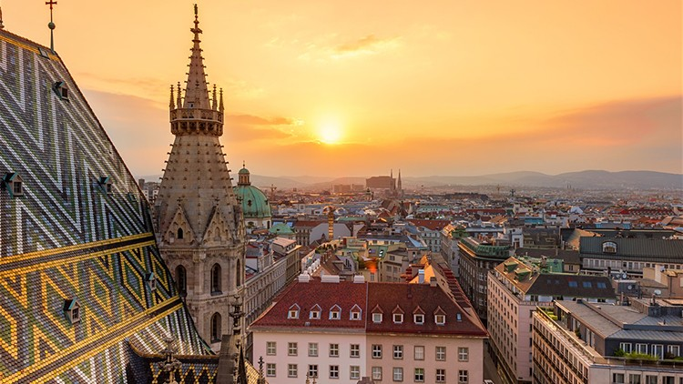
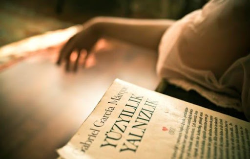

Selin'in Kişisel Blog Sayfası
Merhaba, ben Selin. Seyahat etmeyi, teknolojiyi ve kitap okumayı çok seviyorum. Bu blog sayfasında bu konular hakkında yazılar paylaşacağım. İyi okumalar!
1. Seyahat Maceralarım
Geçen yaz Viyanaen yaz Viyana\u201ya yaptığım seyahat, tarih ve sanatla dolu unutulmaz bir deneyimdi. Schönbrunn Sarayı’nın ihtişamı, St. Stephen’s Katedrali’nin gotik zarafeti ve Kunsthistorisches Museum’da gördüğüm dünyaca ünlü eserler beni adeta zamanda yolculuğa çıkardı. Viyana’nın köklü kafelerinde Sacher turtası ve kahve keyfi yaparken şehrin zarafetini içime çektim. Klimt’in “Öpücük” tablosunu Belvedere Sarayı’nda görmek ise bu maceraya büyük bir anlam kattı. Viyana, her detayıyla hayran bırakan bir şehir.
- Viyana'nın tarihi sokakları
- Sanat müzeleri
- Lezzetli yemekler

Daha fazla bilgi için Viyana hakkında okuyabilirsiniz.
2. Teknoloji ve Yenilikler
Bu yıl yapay zeka ve yazılım geliştirme konularına daha çok ilgi duymaya başladım. İşte dikkatimi çeken konular:
- Makine öğrenimi
- Web geliştirme trendleri
- Bulut teknolojileri
İlgili bir makale için burayı ziyaret edin.
3. Kitap İncelemelerim
Son zamanlarda okuduğum kitaplardan biri de Gabriel García Márquez'in Yüzyıllık Yalnızlık adlı eseri oldu.
- Etkileyici anlatım tarzı
- Unutulmaz karakterler
- Derin temalar

Kitap hakkında detaylı bilgi için burayı okuyabilirsiniz.